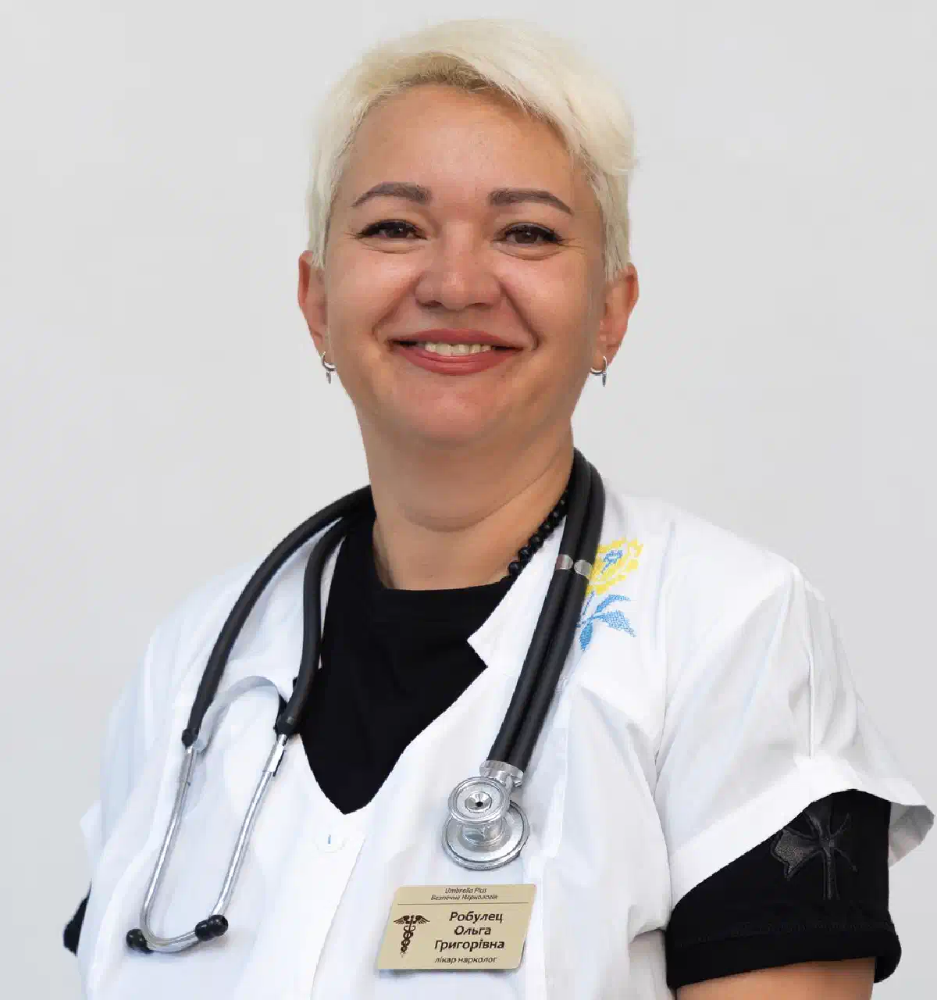

+38(068)
79 72 782
+38(068)
79 72 782Капельница после мефедрона в Харькове
Быстро, анонимно и с выездом на дом


Бесплатная консультация, работаем круглосуточно 24/7
Быстро, анонимно и с выездом на дом

Дата написания: 19 сент. 2026 г.
Последнее обновление: 19 сент. 2026 г.
Мефедрон, также известный как 4-MMC, относится к синтетическим катинонам и обладает выраженным стимулирующим действием. После его употребления состояние человека может существенно отличаться: от усталости, тревоги и бессонницы до выраженной тахикардии, повышения артериального давления, возбуждения, спутанности сознания и других симптомов интоксикации. Капельница после мефедрона в Харькове может рассматриваться как часть медицинской помощи после предварительного осмотра пациента. Врач оценивает сознание, артериальное давление, пульс, температуру, характер жалоб, продолжительность употребления и наличие других психоактивных веществ или алкоголя.
Необходимость медицинской помощи определяется не самим фактом употребления мефедрона, а состоянием человека после него. Обратиться к врачу целесообразно, если сохраняются выраженная слабость, головокружение, тошнота, обезвоживание, учащённое сердцебиение, тревога, тремор или невозможность нормально восстановиться после употребления. При повторном употреблении в течение короткого времени нагрузка на организм может увеличиваться, а оценить фактическое количество принятого вещества бывает сложно. Дополнительное значение имеют индивидуальная чувствительность, сопутствующие заболевания и сочетание с другими веществами. Врач после осмотра определяет, необходима ли детоксикация после наркотиков и допустимо ли проводить лечение на дому.
После мефедрона могут возникать тахикардия, повышение давления, возбуждение, тревога, спутанность сознания, сердцебиение, боль в груди, тошнота и судороги. После окончания стимулирующего действия также могут беспокоить выраженная усталость, слабость, тревожность, внутреннее напряжение, дрожь в руках, нарушение сна, головная боль, отсутствие аппетита и ощущение сильного сердцебиения. Степень выраженности симптомов может существенно различаться. Особенно опасно, если человек становится дезориентированным, чрезмерно возбуждённым, теряет сознание, испытывает боль в груди или у него возникают судороги. В таких ситуациях необходима экстренная наркологическая помощь.
При относительно стабильном состоянии медицинская помощь после мефедрона в некоторых случаях может оказываться на дому. Перед проведением процедуры врач должен осмотреть пациента. Оцениваются пульс, давление, сознание, дыхание, температура и выраженность психомоторного возбуждения. Также важно установить, употреблялись ли вместе с мефедроном алкоголь, стимуляторы, седативные препараты или другие вещества. Если состояние позволяет лечиться дома, врач определяет необходимый объём помощи. В таких случаях может проводиться капельница от наркотиков на дому после медицинской оценки. Капельница после мефедрона не должна проводиться по стандартной схеме «для всех». Инфузионная терапия используется только при наличии соответствующих медицинских показаний.
Срочный вызов нарколога после мефедрона может потребоваться при выраженном ухудшении самочувствия, сильной тревоге, длительной бессоннице, тахикардии, повышенном давлении, треморе или значительном истощении после повторного употребления. При обращении желательно сообщить возраст пациента, примерное время последнего употребления, какие симптомы присутствуют, находится ли человек в сознании, употреблялся ли алкоголь, принимались ли другие психоактивные вещества или лекарства и имеются ли хронические заболевания. Не следует скрывать сочетание нескольких веществ. Эта информация непосредственно влияет на медицинскую тактику и безопасность лечения. Если присутствуют судороги, потеря сознания, выраженное нарушение дыхания или сильная боль в груди, приоритетом является экстренная медицинская помощь.
Универсального состава капельницы после мефедрона не существует. Медицинская помощь подбирается в соответствии с симптомами и жизненно важными показателями пациента. При наличии показаний врач может использовать инфузионные растворы для коррекции нарушений водно-электролитного баланса. Дополнительная терапия определяется индивидуально с учётом давления, частоты пульса, температуры, выраженности тревоги, тошноты, возбуждения и сопутствующих заболеваний. При выраженной интоксикации может потребоваться лечение наркотической интоксикации под медицинским контролем.
Скорость восстановления зависит от состояния пациента. Если часть жалоб обусловлена обезвоживанием и физическим истощением, улучшение некоторых симптомов может наблюдаться во время или после оказания медицинской помощи. Однако капельница не устраняет действие психоактивного вещества мгновенно. Тревожность, слабость, нарушение сна, снижение аппетита и эмоциональная нестабильность могут сохраняться некоторое время. Продолжительность восстановления зависит от количества и частоты употребления, сочетания с другими веществами, индивидуальных особенностей организма, качества сна и наличия сопутствующих заболеваний.
Учащённое сердцебиение относится к характерным проявлениям стимулирующего действия мефедрона. Тактика зависит от частоты пульса, давления, общего состояния пациента и наличия других симптомов. Не следует самостоятельно пытаться «сбивать пульс» случайными сердечными или успокаивающими препаратами. Некоторые лекарства могут взаимодействовать с другими принятыми веществами или чрезмерно снижать давление. Если сильное сердцебиение сопровождается болью или давлением в груди, выраженной одышкой, потерей сознания или резким ухудшением состояния, необходима срочная помощь при наркотическом отравлении.
После употребления мефедрона человек может испытывать выраженную тревогу, страх, внутреннее напряжение или паническую реакцию. Важно находиться в спокойной обстановке и исключить повторное употребление вещества. Не рекомендуется самостоятельно комбинировать алкоголь, снотворные или сильнодействующие успокаивающие препараты в попытке быстро устранить тревогу. Врач оценивает степень возбуждения, сознание, пульс, давление и сопутствующие симптомы. При выраженном психомоторном возбуждении может потребоваться наркологическая помощь на дому либо госпитализация. Если человек становится агрессивным, дезориентированным, не узнаёт окружающих или появляются выраженные нарушения восприятия, требуется срочная медицинская оценка.
Бессонница после стимуляторов может сохраняться даже после того, как основные эффекты употребления начали уменьшаться. Не следует пытаться самостоятельно «выключить» действие мефедрона большим количеством алкоголя или комбинациями седативных препаратов. Если человек находится в стабильном состоянии, важны спокойная обстановка, отсутствие повторного употребления стимуляторов и медицинское наблюдение при выраженных симптомах. Продолжительная бессонница в сочетании с возбуждением, подозрительностью, спутанностью сознания или необычным поведением требует медицинской оценки. Если человек употреблял мефедрон неоднократно и практически не спал длительное время, врачу необходимо обязательно сообщить об этом при обращении.
Да, в отдельных случаях помощь может оказываться дома, но решение принимается после оценки состояния пациента. Домашний формат возможен, если человек находится в сознании, состояние относительно стабильное и отсутствуют признаки тяжёлой интоксикации. Перед проведением инфузии врачу важно оценить сердечно-сосудистые показатели и неврологическое состояние пациента. Сам факт того, что человек может разговаривать и самостоятельно передвигаться, ещё не означает, что медицинские риски отсутствуют. Если во время осмотра выявляются опасные симптомы, вместо детоксикации от мефедрона на дому пациенту может быть рекомендована госпитализация.
Стационар необходим в ситуациях, когда состояние пациента невозможно безопасно контролировать дома. Особую опасность представляют судороги, потеря сознания, выраженная спутанность сознания, сильное психомоторное возбуждение, боль в груди, серьёзные нарушения сердечного ритма, выраженная одышка, значительное повышение температуры тела и резкое ухудшение общего состояния. В таких случаях лечение наркотической интоксикации в стационаре позволяет обеспечить более тщательное наблюдение за пациентом и быстро реагировать на возможные осложнения.
После мефедрона нельзя ориентироваться только на субъективное ощущение человека, что он «просто перевозбудился». Тревожными признаками являются сильная боль в груди, потеря сознания, судороги, выраженная спутанность, психотические симптомы, резкое повышение температуры, тяжёлая одышка и значительное ухудшение состояния. При появлении таких симптомов необходима скорая помощь при наркотическом отравлении. Не следует ждать, пока симптомы самостоятельно исчезнут, и пытаться лечить тяжёлую интоксикацию исключительно капельницей на дому.
При подозрении на употребление большой дозы в первую очередь оценивается текущее состояние пациента. Определить тяжесть интоксикации только по названному количеству вещества невозможно. Фактический состав вещества может быть неизвестен, кроме того, значение имеют повторное употребление и сочетание с другими психоактивными веществами. Если человек находится в сознании и состояние стабильное, дальнейшую тактику определяет врач после осмотра. При судорогах, выраженном возбуждении, нарушении сознания, боли в груди или проблемах с дыханием необходима экстренная медицинская помощь. Не следует давать человеку дополнительную дозу вещества, алкоголь или случайно выбранные медикаменты в попытке изменить его состояние.
Повторное употребление стимулятора в течение продолжительного периода может сопровождаться истощением, обезвоживанием, отсутствием сна и питания, выраженной тревогой и сердцебиением. В такой ситуации врачу важно оценивать не только последствия последней дозы, но и общее состояние пациента. При наличии показаний может проводиться капельница от наркотиков, однако одной капельницы не всегда достаточно. После длительного эпизода употребления иногда требуется более продолжительное наблюдение и последующее лечение зависимости от мефедрона. Особенно внимательно необходимо относиться к выраженной бессоннице, нарушениям поведения, психическому возбуждению и сердечно-сосудистым симптомам.
Одновременное употребление мефедрона и алкоголя усложняет оценку состояния пациента. Человек может недооценивать степень интоксикации и продолжать употребление. Кроме того, врачу необходимо учитывать воздействие сразу нескольких веществ. После такого сочетания не следует продолжать употреблять алкоголь в попытке уменьшить тревогу или помочь себе уснуть. При обращении за помощью необходимо честно сообщить врачу примерное количество алкоголя, время последнего употребления и другие принятые вещества. При ухудшении сознания, повторной рвоте, выраженной тахикардии, боли в груди, судорогах или других опасных симптомах может потребоваться снятие наркотической интоксикации в условиях медицинского наблюдения.
Сочетание мефедрона с другими психоактивными веществами делает клиническую картину менее предсказуемой. Разные вещества могут одновременно воздействовать на сердечно-сосудистую и центральную нервную системы. Поэтому при обращении к врачу необходимо сообщить обо всех известных веществах, даже если пациент считает их количество небольшим. Не рекомендуется самостоятельно использовать дополнительные стимуляторы, седативные средства или другие препараты для устранения неприятных эффектов мефедрона. Тактика помощи должна определяться после оценки состояния пациента. При необходимости проводится лечение острой наркотической интоксикации.
Ухудшение состояния после употребления психоактивных веществ может возникать независимо от времени суток. Круглосуточная наркологическая помощь в Харькове позволяет обратиться за медицинской оценкой ночью, утром, в выходные или праздничные дни. При обращении желательно заранее сообщить основные симптомы, возраст человека, время последнего употребления и информацию о других веществах. При относительно стабильном состоянии помощь может проводиться дома после осмотра специалистом. При тяжёлых симптомах домашний формат заменяется госпитализацией или экстренной медицинской помощью.
Многие пациенты опасаются обращаться за помощью из-за нежелания распространять информацию об употреблении психоактивных веществ. При обращении в частную медицинскую службу может предоставляться анонимная наркологическая помощь в соответствии с правилами оказания медицинских услуг и действующим законодательством. При этом конфиденциальность не означает, что врачу следует скрывать важную медицинскую информацию. Необходимо честно сообщить, что именно употреблялось, когда была последняя доза, были ли другие вещества и какие препараты пациент уже принимал самостоятельно. Эта информация помогает выбрать безопасную тактику медицинской помощи.
Стоимость капельницы после мефедрона в Харькове начинается от 2499 грн.
Для вызова врача необходимо сообщить адрес в Харькове и кратко описать состояние пациента. Полезно заранее подготовить информацию о возрасте человека, примерном времени последнего употребления, длительности эпизода, наличии тахикардии, тревоги, выраженного возбуждения, бессонницы, употребления алкоголя и других веществ. После приезда врач осматривает пациента и определяет дальнейшую тактику. При относительно стабильном состоянии может быть организован вызов нарколога на дом в Харькове. Если состояние тяжёлое, вместо домашней капельницы может потребоваться госпитализация.
Продолжительность процедуры зависит от состояния пациента и объёма необходимой терапии. Инфузионная помощь не должна проводиться максимально быстро только ради сокращения времени процедуры. Врач выбирает объём и скорость введения растворов с учётом клинического состояния. Кроме самой капельницы время занимает первоначальный осмотр, измерение жизненно важных показателей и оценка состояния после завершения процедуры. Если во время медицинской помощи появляются новые симптомы или состояние пациента ухудшается, тактика должна быть пересмотрена.
После употребления мефедрона не рекомендуется пытаться самостоятельно корректировать состояние большим количеством лекарственных препаратов. Не следует повторно принимать мефедрон для временного устранения неприятного состояния, использовать алкоголь в качестве «успокоительного», самостоятельно комбинировать сильнодействующие седативные и снотворные средства или заниматься интенсивной физической нагрузкой при тахикардии и плохом самочувствии. Нельзя оставлять человека одного при выраженном нарушении сознания или поведения. При судорогах, сильной боли в груди, потере сознания или нарушении дыхания требуется экстренная помощь при передозировке наркотиками.
Капельница после употребления мефедрона помогает решать только текущие медицинские проблемы и не лечит саму зависимость. Если человек регулярно употребляет вещество, увеличивает частоту употребления, повторяет дозы в течение одного эпизода, испытывает сильную тягу или продолжает употребление несмотря на негативные последствия, после стабилизации состояния следует обсудить дальнейшее лечение наркомании. Работа с зависимостью может включать консультацию специалиста, психотерапию, оценку сопутствующих психических и соматических проблем, а при необходимости — реабилитацию при наркотической зависимости.
Телефон для консультации и вызова нарколога на дом в Харькове: +38(050-021-69-57)

Статья проверена экспертом
Робулец Ольга
Врач нарколог, ординатор
Возможно интересная статья:
Влияние марихуаны на организм человека

Да, мы строго соблюдаем полную конфиденциальность на всех этапах лечения. Информация о пациенте, диагнозе и прохождении терапии не передаётся третьим лицам. Обращение к нам не влечёт постановку на учёт. Вы можете быть уверены в безопасности и анонимности.
Программа лечения разрабатывается индивидуально после консультации со специалистом. Учитываются вид зависимости, её длительность, физическое и психологическое состояние пациента. Такой подход позволяет повысить эффективность терапии и снизить риск срыва. Мы не используем шаблонные решения.
Да, мы сопровождаем пациентов и после основного курса лечения. Проводятся консультации, рекомендации по адаптации и профилактике рецидивов. При необходимости возможна дальнейшая психологическая поддержка. Это помогает сохранить результат и вернуться к полноценной жизни.
Анонимно

Помогли при ломке
Анонимно
Хочу поблагодарить специалистов фирмы «Амбрела плюс» за реальную помощь в сложный период. Обратился в состоянии ломки, было тяжело и физически, и морально. Врачи отреагировали быстро, всё объяснили, поддерживали на каждом этапе. Состояние стабилизировали, стало значительно легче уже в первые часы. Спасибо за профессионализм и человеческое отношение.
Номер телефона:
+380 (68) 797 27 82
+380 (50) 021 69 57
Адрес наркологического центра вашего города уточняйте по
телефону
Работаем в: Киеве, Одессе, Львове, Харькове, Днепре,
Запорожье, Черкассах, Чугуеве, Черноморске, Каменском
Telegram: t.me/umbrellaplus
График работы: Круглосуточно